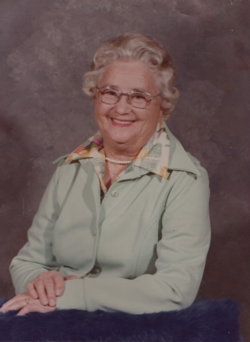
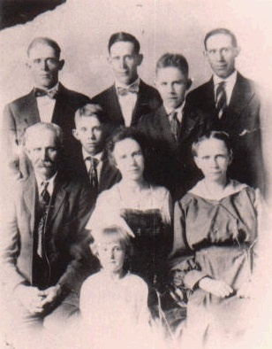
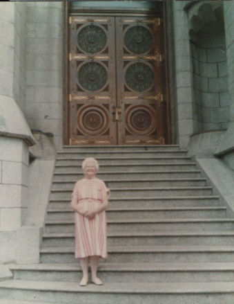
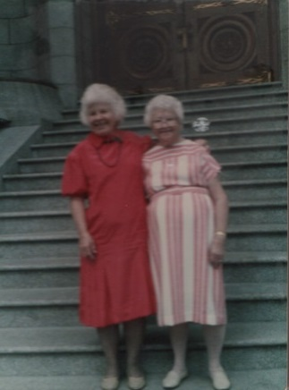
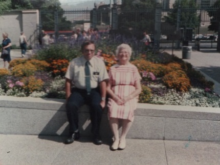
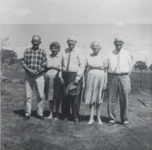
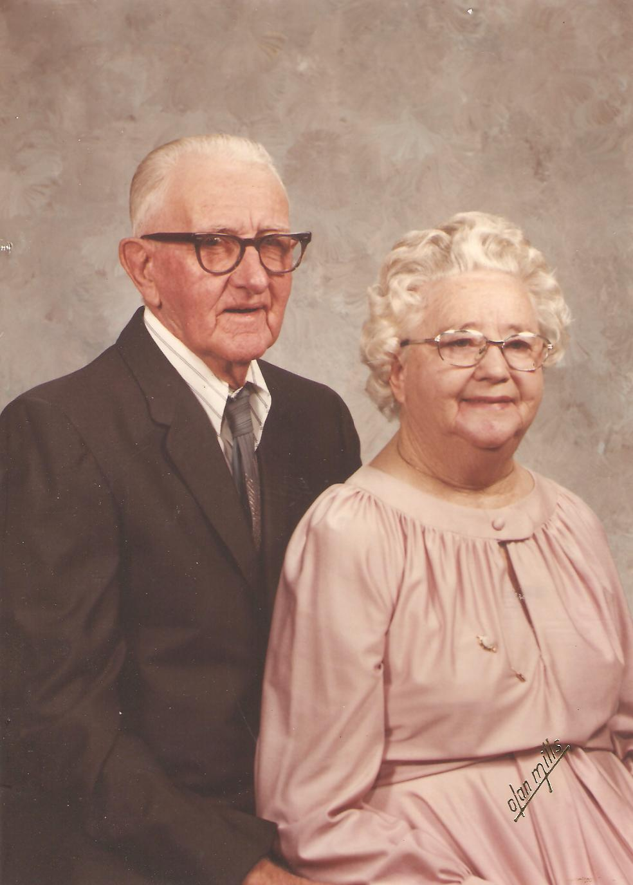

 I Thelma Morgan was born in a small town Sanford, Conejos, Colorado on 2 January 1911, a cold day the ninth child of seven living children, five boys and one (1) sister. The oldest brother, James William ded a few weeks after birth, my mother was very sad at the loss of her baby. When Geneva the other sister, nin years old died of diptheria mother and family had been under quarantien for six weeks. When Geneva died my mother told me that when she had to dress that dead child and have her held up to the window to be seen was the hardest thing she had ever done. Mother was grief stricken over this, later another baby was born, a boy, Charles, but mother wanted another girl so she took bottle after bottle of Lydia pink compound to get pregnant after so long a time she finally got pregnant. There was never any doubt in her mind that I would not be a girl. Mother was in the change of life and was 41 years of age. When I arrived all the family was very happy. Mama was in labor a long time. The children stayed in the kitchen. All were worried she was sick so long. Daddy finally came and told them. When they finally found they had a baby sister (afraid I turned out to be a disappointment to them) not really I was really loved by all. I was blessed on February 17, 1911 by Eprhaim Mortensen in Sanford, Conejos, Colorado. One time as a baby, Edna and Lawrence each thought the other had me so therefore I was picked up off the floor un hurt. I gave my mother a bad time. I was always running away, we lived across the street from a canal nd it was usually full of water. Mama was always afraid I'd fall in. One of my very earliest recolections was going out in the garden to play and fell asleep between the rows in the garden. Mama was frantic. One day a neighbor boy that I played with, Frank Saule, we ran off. I remember going to an old vcant house and Frank and I werer sitting in the window when we were found. (We were very very young) When I started school I was sick so much.
(School was held in a small building somwhere close) Mrs. Saule was the teacher but because I was sick so much I didn't pass the next year school was held in a big red brick building. Frank Saul, Sr. was the superindentent, high school was held upstairs in the building. Mrs. Saul was the teacher again. I remember she would make letters with chalk on our desks and give us red beans to put on the ltters to learn. She would have a nice table with sand and glass over it. Would fix up the sand table withdifferent things. I thought this wonderful. In my second year Almira Brothers ws the teacher, don't remember too much of the year she was very strict. We got down to work by this time. Would like to tell about the rest rooms. It was quite a novelty for me to have indoor toilets we went down a number of steps into a big room where we would gather nd play jacks on a cement floor ws a nice cool place for jump rope and jacks my first girl fiend was Cara Fredericksen she lived about a block from our house we licked to dress up in my sisters clothes and high button shoes we always had a play house we had a lot of Box Elder shade trees they would put out long shoots it was annoying these trees for our play houses stores etc were made. I always liked dolls and cats as I was called cat sister by brothers I would put the cats in the doll buggy and push them around. At Christmas the town held a community Christmas in the tivola. There would be a progrm always a big decorated tree on the stage each family would put one present on the tree for ech small child. That is were I got my doll buggy. Remember pushing it home afterwards. Always liked to play paper dolls cut out of catalogues kept them in boxes behind the books in book case once in a while Edna would clean and throw some away had so many never missed them. Always loved Primary it was always held on Monday after school. we would learn so many things about Joseph Smith and do so many things Melva and Marba Jensen was a couple of teachers they were the bishop's daughters.
Always enjoyed the programs they put on at the tivolo a big building the church built in 1894 for dancing, programs, basketball shows of all kind of entertainment the building was round with seats all around it the floor ad springs nice for adnacing. It consisted of two dressing rooms a stage, bowling alley, soda foountain, hat check rooms also a room for movie picture film etc. The Primary would have a big maypole in center of building the larger children would dance around it and braid always enojyed this especially if I got to dance with Frank Saule when ever we had a special day (I always had a new dress for these occassions) like the 4th of July and 24 July it was called Pioneer day we would wake up to the sound of cannon balls going off. the day consisted of a parade Daddy always drove the covered wagon and Grandma Jensen rode with him as long as she was able (this was before I was born) Then we would meet at church house for talks and songs. after dinner there was always a childrens dance at the Tivoli what fun then ball game races games etc at night a dance for adults. I remember once I was given a dime I ask if I could spend the whole thing how grateful I was. About the only way I would get to by candy was Mama would give me an egg sometimes two depending on the price of eggs. I would always take some candy home to her. Frank Saule and I continued to be friends we would always share our candy I never went with Frank as a boyfriend (he was ust a friend) we would be a bunch together but I usually went with Merle Hutchins a cousin that lived with his uncle and auNt. a cousin of Troy Hutchins a friend in the crowd. We lived the north end of town there was lots of sagebrush a bunch of us kids would get together at night and build a big camp fire and play games one I especially liked was run sheep run. Sometimes we would roast potatoes. I cannot write this without mentioning one neighbor boy Clatyon Peterson he was thorn in my side always. one night at the camp fire he threw black pepper in my eyes all though my school time he would hurt and do mean things call me names the wre not always nice. So many times Frank would make him quit and come to my rescue usually we walked home together. About this time some new neighbors moved into Granny Creamers house a girl my age we would come and go to school together she knewe how to ballet dance hadsome of the slippers and helped me learn boy I practced until I finally learned how I woud use her slippers fter I learned. We always went to Sunday School and church on Sundays in the afternoon a bunch of us girls would write and practice plays we would put sheets or blankets up for our curtains we would put on these plays sometimes I would dance.
 our underwear wasn't always the nicest our bloomers (panties) were made out of flour sacks elastic at top full legs with elastic I remember one time Carrie Irwin had remarked it wasn't everyone that had pnsies on her seat (it was pnsy flour we had) which she did. I remember my first pair of ought apnties they were a blue knit with several rows of elastic on bnd and they were wore below the knees. as we were older would put on plays at school during the noon hour for the small children. Back to school when I was in third grade Jane Crowther was the teacher as I remember it was a hard year. I always hated arithmetic and got poor grades. Jane was a very sweet teacher really loved her. we usually there in sanford would go on an outing the last day of school someties we would go upon the Conejos River and other times would go in wgons to Saddle Back Mt. east of town. one time the boys found some thistle weeds and hit us girls on the legs I can still remember how red and how they hurt when there was water we girls would go swimming in our underwear some times they were long arms, legs as we grew older they were shorter anyway we would then take them off and put the wet undies in our lunch pails. As I remember the water was cold as would be up there the last of May. I never heard mama say anything but she had to know. Don't remember too much of the fourth and fifth grades only memorizing things. Clara Miller was a teacher. During the fall of the 6th year the school house burned down so we the sixth grade as Ethel Chesly our teacher went over into the church seminary building a small 1 room building. some grades went in parts of the church. anyway we had a ball that time.
Across the street Swen Peterson had a store in one side was empty had a lot of things stored. the whole bunch of us boys & girls build a tower in there. we had a post office, stores etc. had a lot of fun one day we didn't hear the bell and was late so we all had to stay in after school before the year was over the new bilding was build also another building for high school as high school was on the second floor of the old one anyway before I finished the school burned down twice. (It is now 1982 a nice one all together) In the new building I was luck to get a seat by the radiator. Frank behind me we would put our big geographys to warm them and then sit on them. Frank and I continued to be friends we always shared our candy or cookies with each other sometimese we would raise our ooks up and eat behind them this is the yer we studied and had to memorize the Gettysburg Address vthe first part was easy but the second half hard but I do remember that I did get it all 100%.
Another thing we had to learn all the counties in Colorado in civil government. It was a hard task too. In the Seventh grade George Irwin was the teacher but we did have a number of substitutes that year sometimes we the students would bring candy etc on Friday so we spend the last part of day with a party and spelling bee always enjoyed this as I was usually no 1 or two I was a good speller. I did ply hookie some this year and would have to go to the principal the school subjects were getting harder by this time. In the eighth grade Harry Thomas was the techer we clled him Ike never liked him and the feelings were mutual. Instead of helping he would criticize us before everyone. we had lots of music this year and would get to go over to high school for some subjects. I really wasn't too interested in school at this time. I planned to be a movie star some day. Some of my best friends was a second cousin Ella Wright we use to have so much fun when we were younger her father died when she was very young she had three sisters her mother Jen Wright did our sewing for us she was a very good seamstress. Ella and I were just a few months ages apart she & I were the first two girls to hve high hills boy we were relly grown up. back to my friends Cara Frederickson had moved away several years back so Sadie, Jack, Edith, Carther, Josephine, Gylling a neighber she had (1 onry brother R eed my age) we use to play cats and play houses earlier. I would like to go back to when I was a small child my oldest brother had married and when I was five years old I had a new niece Mabel I loved her she was always like a little sister and still is she wore her hair in ringlets. oh by the way I guess I was about eleven or twleve before I got my hair cut for years I remember ten mama would put my hair up in rags every night so I would have long ringlets. I remember when I finally graduated from long stockings to half socs Edna was so happy to fix me up with those.
 When I was 10 years old Mama Edna nd I went on the train leaving at Alamosa to Salt Lake City we had a real nice room at Hotel Utah a short distnce from Temple Squre went to Conference in Tabernacle had a seats up in the balcony the building was relly packed remember the pipe orgn and the coir a very specil dy. while there visited everything in the square but the temple. one day we planned to go by bus out to Salt Lake but Edna tood bad headache. we stayed few days and one night took train to Idaho Falls Idaho we went to mama's sister aunt Miria. stayed there two or 3 weeks had lots of gooseberry pie and as usual each night up went the hair in rags. Visited cousins at Shelly & Roberts Idaho. when we started for home, Edna stayed there mama & I went to Utah to her old home stayed with friends visited her old home. visited with daddy sisster Eliza Cooombs had lots of cherris daddy youngest brother Andrew several relatives the Ollrids had my first ice cream frozen by electricity there. the day we left we had dinner at Uncle Jenas Jensen then he took us by car to Thisle to get on the train for home ws glad when we got to Salida colorado changed trains for Alamosa when we got to Alamosa the Rio Grande river w s flooded and the tracks were under water some people got off and walked across but mma & and I stayed on the rain. Lewis my brother was there to meet us sure was glad to see him and be home. It was a wonderful trip really emjoyed that summer some of the things we visited in Salt Lake made a lasting memory to me.
at the home in Sanford we had bout six different apple trees how I used to like to climb those tree mama use to can an awful lot of fruit she would make jelly in gallon crocks. I use to stay out of school and help her can mostly peaches Poor mama didn't have it too eaasy she lways worked so hard was a very good cook she was never too well especially after she was butted by a goat hurt her back had rhumatism real bad finally lost the use of her hands an took to a chair. Daddy and I would have to dress and bathe her she could feed her self with two fingers of left hand mama had real long hair I had to comb & brid it. It was about this time I quit school I was almost 15 yrs old at this time so I took over house cleaning, cooking ironing. Daddy would have Mrs Gaxein do the washing Edna had give mama an electric iron was sure a lot better than having to heat irons on stove. Mama was very particular kept a very clean house I had to do things over many times if it wsn't good. The church people was nice I remember the Bishop and wife visiting us. when mama was able to work at Thanksgiving Christmas and Easter Mama would make Danish beet ar this time I would like to write as I remember how she did it. (mama had a big black bread pan tht would hold six loaves of bread) she would put barley in this and brown the barley and stir it often she would fix several pans of this barly put it in a white sack intoa a boiler with another small bg of hops and boil for quite a while, would then put into a tub later would add sugar and several yeast cakes put into a wooden keg with a spigot in the bottom this was put in the basement under bedroom but we went down into it from kitchen this is where we kept milk, cream fruit etc (sometimes would get awter on the floor) back to the beer would leave it almost 10 days we enjoyed it. mama always made a 4 layer white nut cake to eat with it when we had company yes Bishop Valentine would drink some too. Bishop Valentine woud bring some money and give to momma several times part would be in dobills Dobills were form of moey they used there in exchange of eggs butter etc. Mormon money I guess It helped us financially s we were always poor semes like never had any money for powder some times used a little flour for our rouge used a lip stick we would send for samples from companies.
Always went to mutual had to study lessons some were hard on Tuesday night Sister Valentine was our Bee Hive teacher I remember the sewing we had to do usually went to her home for this she taught us how to make pot holder & button holes in our flour sack bloomers (panties) they were made to run the elastic around waiste & legs. she taught us to use a thimble so when she was around I would put it on my finger nd slip it off when she wsn't looking I still cannot use a thimble whern goionog to school we were never allowed to wear pants to school as a girl we could wear snickers usually made out of kahki material when we had spring trck meet or go on an outing but not allowed to wear in class room. Sister Valentin had a girl a little older than I was she hd pair of snickers to sell I wanted them so bas as I didn't have any Charlie gve me the 50¢ to pay for them I was so happy and proud I was pretty good in track small and could run fast and jump hurdles about this time Edith Carter was friend we had a lot of fun together Edna had bought a thin scarf with big flowers all over it and real wide fringe one Sunday Edith & her younger sister Gladys decided we would strip off and tie this scarf around us let the fringe hang in front was going to take out pictures but when it came time to strip off we couldn't do it so left our cothes and and tyed the scarf around and we poised & paraded we were really someting at this time.
 Some times on Easter fter church we would tke a picnic lunch down to the red willows. me I mean Ella Wright her sister Alice and Edith would make ply houses nd stay all afternoon. The day before Easter mama would give Charlie & I all the eggs that were laid that day to hide would race when heard a hen cacckle sometimes would hide a few before on the sly. several times they would freeze. on Ester morn we always hd eggs in about every form for breakfast. an I cn still taste Mamas custard pies. seem I cannot make them that wy. would play so hard then I would have sick spell the remedy for everything was castor oil & camaiel Dr cme nd gave me a big dose of cneoule. had about every disease that went around.
Now back to the time mama was sick and crippled up with rhumatism she had helped Orpha (oldest sister in law) Melvins wife they had Mabel then Maurice and he was about 6 years old nana would wade in the sno and go down and help Orpha with the children as Marvelle had arrived by this time. Maurice had rhumatic fever and was sick so long finally died about 6 years old Mama never was well after this and the rhumatism really got her down I learned to keep house the hard way sometimes mamas hair wasn't combed until noon when I cam home from school for dinner. know I must have neglected her badly but I did love her & daddy so much. when I was small daddy would rock me to sleep in rocking chair his song was Old Dan Tucker he was always singing it (got out of wshing a lot of dishes that way). after evening dishes were washed or rather while washing would put a batch of fudge or honey candy on to cook would have to pull the honey until it turned white real good sometimes we ate pop corn or apples when hog killing time came was really a big day poor mama had a lot of hard work she would render fats into lard grind sausage they would clean intestines and mama had a horn that she would stuff these intestines very good sausage we always had fresh liver for dinner that day and I realled liked it (alas how ones taste changes) About this time in my life my best friend Frank Saule and family moved to Long Beach California. Mr Saule was not a member of the church when he took over the supertindant of school but didn't take him long to change he had one daughter older than Frank she and my cousin Maggie Jensen use to make doll hats nd clothes and sell us also very pretty paper flowers. later Maggie moved to calif wanted me to go but I was chicken. (1982 talked to Maggie a long time by phone she lives in Glendale Calif) always liked my cousin Maggie she was so pretty always liked to go to her mothers aunt Nora jpise Aimt Mpra was mamas brothers wife be he died early before Maggie was born. then Nora married Thidore Hansen and was at this place we visited (I never sw uncle Jim) aunt Nor ws a lovley person and always had so many flowers really had a green thumb Maggie had one brother Earl he ws Charlies age.
always liked the Jensens (on mamas side) but didn't care too much for Morgans as I was told by aunt Eliza Cooombs dddy brother George (lived in Sanford) got dddy's part of estte some of them were real uppity. seemed to have more than we did but daddy was worth so much more always doing something for someone else he hd a mustache and I would have to trim it for him and one thing I hated was to shave his neck with a straight razor never did cut him but still shudder. I would have to ride the hourse when daddy plowed the garden hted this as we always had such a big garden charlie & I always had to crawl and weed the small plnts as radishes, lettuce, spinah. antoehr chore I hated guess I was plain lazy but sure enjoyed eating the vegetables.
 would get to go swimming a lot thre was a good hole bout a block aways always went in dress & panties would go a lot with the IRvin girls Elme and Mary. Mma didn't especially want me to play with them the whol family would stretch the truth we hd fun together but they finally moved to Sn Diego. (Edna met them years later when she moved there also.) at the time mama hd to quit work the family bought her a realy nice leather chair high in back for her head. I know it was hard on her to just sit and tell me how & what to do. I remember my first batch of bread boy what a mess Orpha came in and finished it the second time wasn't as bd mama was sick for several years. seems the family all came home on Sunday which was a bunch.
One February Mama & I went up to Center to visit my sister Edna, her husband Bob was always so good to mama bought her things she liked grapes, her favorite candy bar and cheese mama always liked cheese (and yers before use to make rel good cheese in a tub) mama complained of her stomack hurting the navle was so sore. we would put creams etc on it but when we got home wasn't long before she was bedfast poor dear she did get up once but had to go back daddy said she would never get up again. ate a very little bit Edna came down and stayd for several weeks then to help. one night I had been to a dance (always slept with mama) she se started screaming about pretty baby when I finally got the light on and settled down, daddy was upset by now so he slept with her I crawled in bed with Edna & three kids I remembe Edna squeezed my hand the next morning she told me that a big ball of light came into the room and circled mam's bed three times inside this circle was a dark one and three weeks later mama passed awy bit was a horrible experience for me I was now 17 yrs old she scremmed for hours & hours "I want" but we never found out what she wanted poor darling was at rest and not hurting but the Dr told us that night she had cancer. She was put away in her temple clothes and buried at Sanford Cemeber how I missed her.
Lew and Ruth moved in with daddy & I had one sone Dale small and Ruth was pregnant, Colleen was born there at the house. so I had to tke care of Dale and he was one spoiled brat. Lew use to take him out behind the barn and spank him. Lew paid me for washing diapers etc a woman from La jara would come and bathe Ruth & baby but Lew & Ruth didn't stay long Daddy & I had it alone and oh how I hated it. usually Mabel or a friend Stella JOhnson would spend the night. About four months later one night daddy called me and told me to go get my oldest Bro and a neighbor to come and administer to daddy he was very ill the next day moved him over to brother Melvins house where he died a week or so later with pneumonia I was really grief stricken and cried so hard this was a couple days after Thanksgiving daddy was also buried at Sanford Cemetary.
 After things were all divided up, I went with Edna & Bob to Center to live. I had to take several bottles of nerve medicine. It took me a long time to get over this loosing them withing 4 months afrid I was a little bitter, but Edna & Bob was very good to me Bob or SLim as I called him was very good to me. one day after several weeks or moth or so they insisted one me going to a dance Slim went and introduced me to several boys. Slim was a friend to every one all liked him. Met Harold Vaudle that night also a date for next week to go to Del Norte show & dance. I like Harold we went together for quite while he was so darn good looking, dancer etc treated me with respect, but finally they moved up near Denver went with a lot of boys and met nother Harold Edwards Peanuts everyone clled him he wasn't as good looking but a good dancer also tret me swell he was always singing I met a million dollar baybe in a five & ten sent store but we split up. was told that his mother did it we were getting too serious and she wanted him to go on to school he did and made a Dr. I saw the girl he married later. Edna knew her and said a nice person.
Moved in the next house later Edna got sick she was very ill couldn't keep anything down. I thought for awhile I would hve to raise her three small children fter several months she finally begn to get better (was too sick to take to Monte Vista Hopital) a mexican lady cme in and did the washing I would hang them out nd do the rest Slim hd filling station and tire shope he was always good to help Edna finally got well. I went to work for Mrs Milner accross the street took care of a 4 year old girl Pauline or poggie fix two meals tayed thre for sever months was a nice job $1.00 per day. later went to work in the resturant owned by George & Mary Sprietzer a very nice couple she was Catholic, worked there for several years ma $12.00 a week and my meals while I worked there met Bob Ellis his dad owned a grocery store a few stores down. went with hime quite a while one night we went to carnival in town we rode on a tilt a whirl once and did alright, untill a bunch of kids came by nd wanted us to go gain I lways hated a wet blanket but knew what would happen but Bob & I got on with them the fellow that run it opened it up and round & round we went. when finally stopped I was very ill Bob was quite freckeled nd he was so white could almost fleck the freckles off his face we rode around in the fresh air thinking it would help but finally I hd to go home Edna undressed me and put me to bed boy was I sick. The next morning I got up and went to work at seven did very well untill the carnival bunch came in for breakfast when everything flipped I went home to bed for the day the net dy wsn't so bad was able to stay to work liked the work there and stayed until I got married,
The last few months or weeks before mama passed away Stella Johnson & I met a couple of boys took them to church that night they were JW Thomas & Merrill Sharp from Artesia N.M. they spent the suummer up there and worked in the pea fields so we was together the summer mama passed away. enjoyed being with them they elft going to Kanss Jay and I continused to write later he came back on a visit nd later to work on the road between Monte Vista & Alamosa saw a lot of each other that year after the job was finished he went to Albuquerque where he was when we were married hauled potatoes from Center to Albuquerque to sell. We married in Alamosa Colo. by a judge Elmer a witness Jan. 15 (darn it was cold) Gray, Jays younger brother stayed with him, the next day we left for Albuquerque, stayed at Sanford at Mels & Orpha that night, and onto Albuq. thought we would never get there it was a truck loaded with potatoes it was night when we arrived stayed in the motel the man that bought the potatoes owned. the next day Sunday they fixed us a loevely dinner the bumch at the motel played a lot of prnks on us. received several gifts. My first ironing board made by a old batchler.
 the fellow that owned the motel was to make payments on truck for a trade in on a car he failed to do so they came and took the truck back. Jay and Gray couldn't find any work (beginning of depression) so in Jys car a small coupe we left for Artesia drove all night, arrived early in the morning I remember Jays mother coming out to meet us she gave me a big hug She was a very nice person also Jay's Dad after staying there for month or so took the cr back to Monte Vista Colo stayed with Edna & Bob awhile then Lew & Ruth, finally moved in the old house at Sanford with Mel & Orpha Lawerence & Nettie and all the kids Jay and I and Lawrence kids slept up stairs, later divided the house Mel & Orpha took the two front rooms, the rest two back ones and upstairs. all hada very rough time. finally Lawerence went to work for Crowther on a farm. so Jay & I had the back rooms
after several months we went back to Artesia stayed with Jays folks (was there seven years before I saw any of my folks gain) the depression was in full swing all Jay could find was odd jobs he did cut a lot of wood and sold. Garnett was working at Conoco. Gray joined the WPA Daddy Frank was at Star grocery for a long time. Jim was born about this time May 4 1933 he was such a joy we all loved him. only when Garnett worked nights and in the mornings he would cry when I would bathe him, it would make uncle mad and leave the house, but when Jimmie Don was older would go on motorcycle with Garnett and get a ice cream cone, Garnett remarked to his mother he was one good kid always picked up his toys. When he was about a month old Jay got a job on Bob C. Bannons farm a day we lived in a one room house in the boiling hot sun, Jay cut a barrel in half put a short stove pipe in it set out a little ways from the door I would cook on that, but wasn't much cooking as we did not have a lot to eat (the depression was hard) I would go into Bob & Mildreds house and spend the afternoons they had bby three months older than J. Don some times one would cray and wake the other. Mildred and I became close friends. In Sept we went back to town and Jays folks. Jay would find an odd job to do. Mrs Thomas and another woman Mrs Merchant had a little food shop down town made pies, cakes, cookies and sold them. She and I beofre Jim Don was born use to make such and tke to star grocery to sell. Mrs Thomas was not a lazy person (I know they must have really got tired of us around all the time)
On August 1 1981 I made preperations to go to Clovis N.M. (the stake patriarch lived there) to have my patriarchal blessing given. Jay & I took our camp trailer it was on a rainy Friday morning and traveled to Clovis about 150 miles we got there in the afternoon found a camp ground to park the trailer locted where Pres. Norris lived. I felt very good nd very excted about this. fasted that night and next morning. arriving at his house about nin o clock on Sat Aug 8th after waiting a few minutes in their living room he finally came in. I really had a very good feeling. after a few questions and answers &apm; explanations he laid his hands on my ead. (this was all taped) about halfway thru my head began to spin and a little nausea I thout oh I can't get sic now but then everything was ok for awhile and then it happend again only not as bad. I was very touched by this an I do know it was truely the Lords work. I encourage everyone to have theirs given. Later Jay came by to pick me up. Pres Norris wife and daughter went to pickup to met him a truely great experience.
About the middle of Oct 1983 our Branch President Maderias announce a temple excursion to Mesa Ariz on October 27,28,29 he ask if I would like to go we were to go by bus would cost us $20.00 our meals extra I was thrilled for the chance to go. would have to get a temple rec from Stak Pres Levi at Roswell. I was al thrilled to go Jay didn't seem to mind and then I came down with bronchities was real sick.
Organization of the L.D.S. Church (Artesia)
The first LDS (Mormon woman to come to Artesia was Lucille Black Hancock she arrived in 1927 from Tulsa Okla with husband Harold a (non mormon) and 1 girl Thelma or boots in 1931 Thelma Morgan Thomas arrived from Sanford Colo. and JW Thomas a (non mormon)